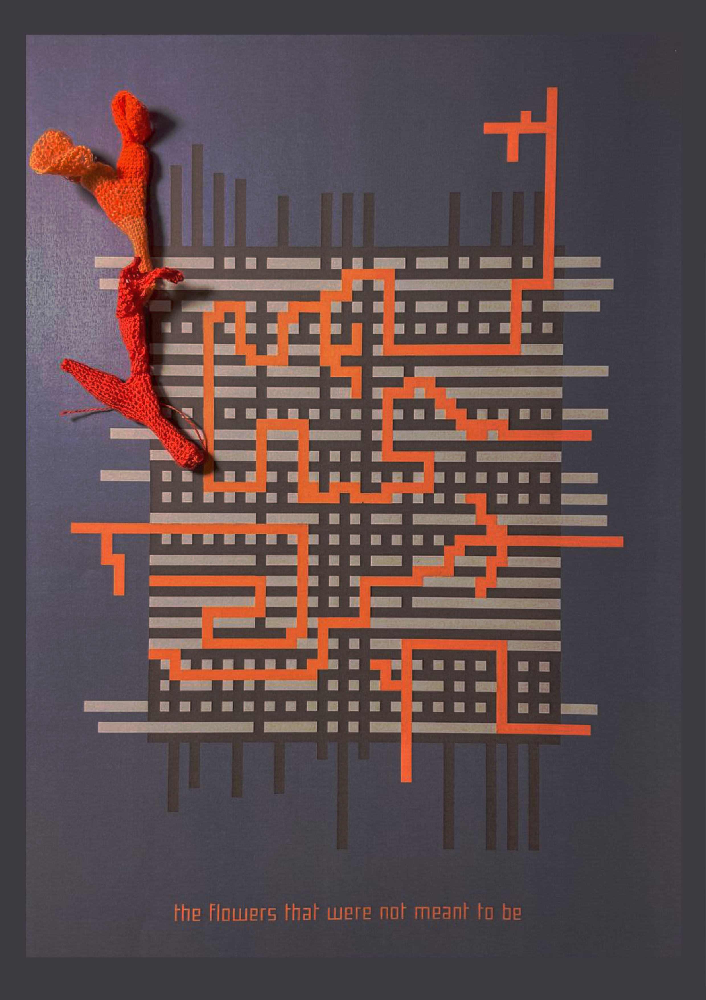
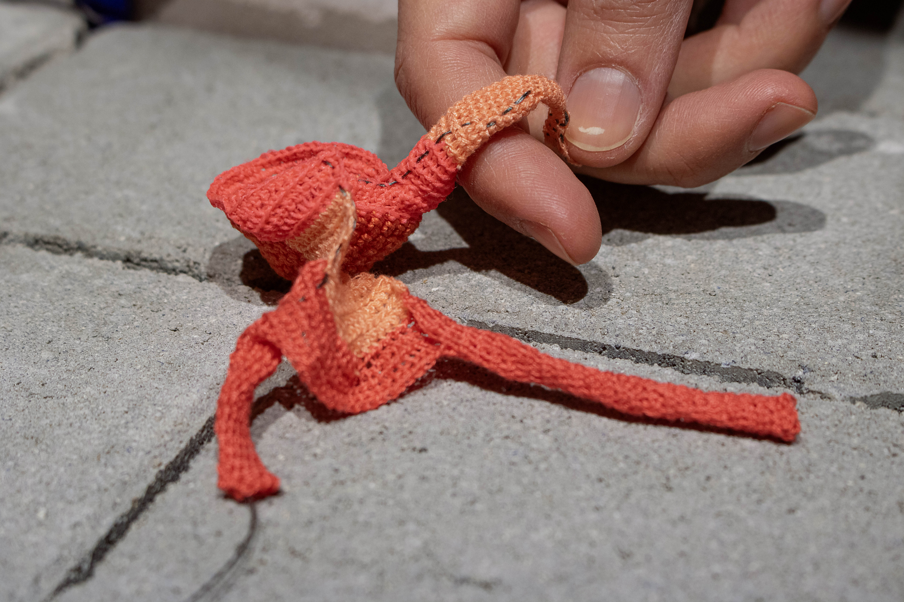
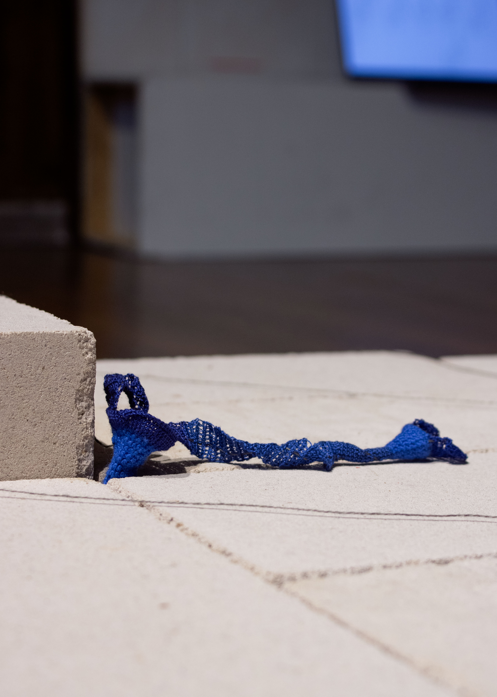
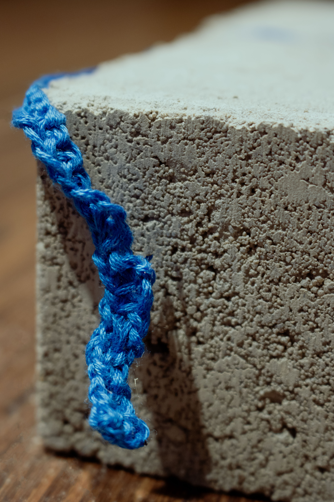
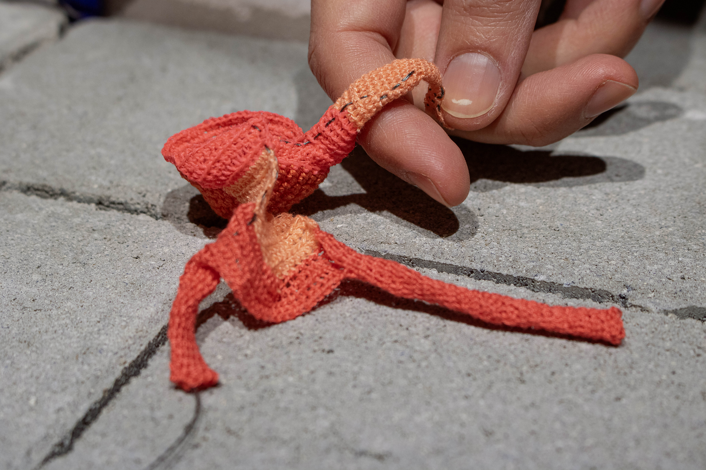
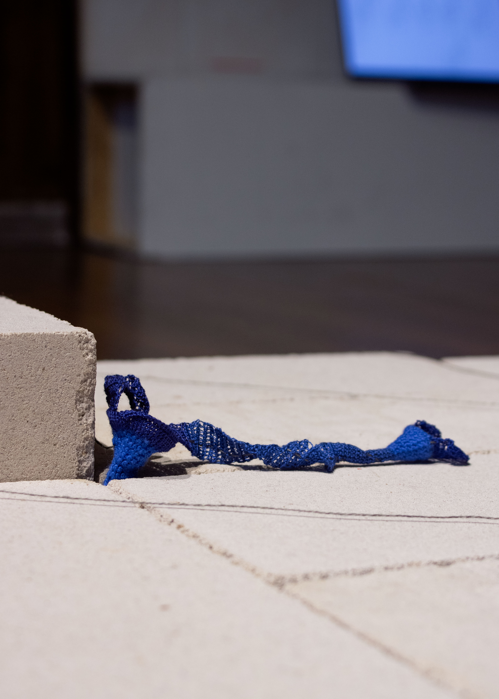
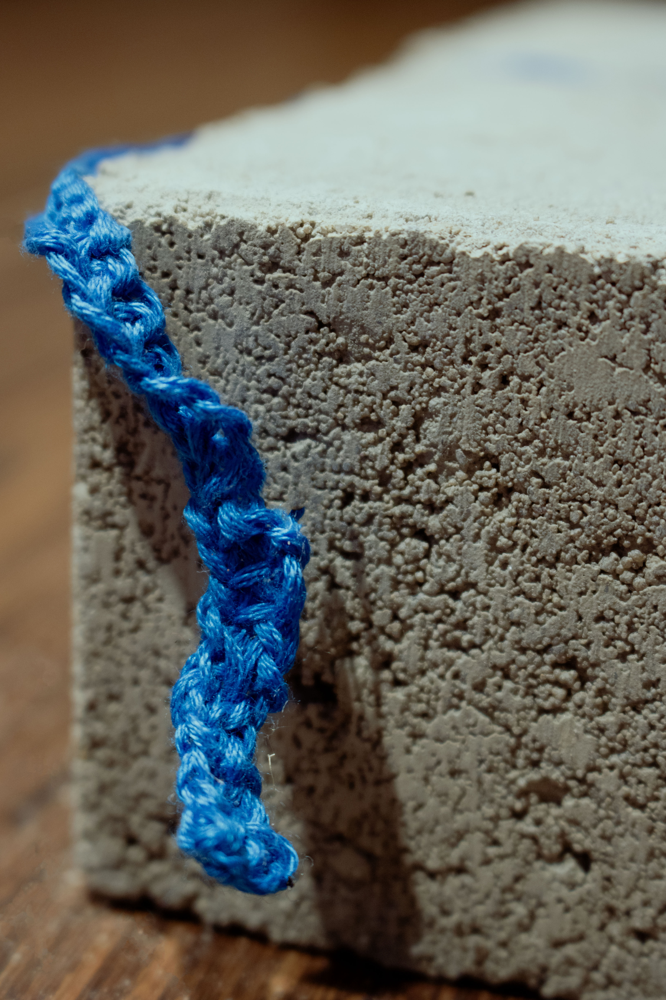

Queerness has always been there.
In the cracks of societies.
In the spaces between.
On the margins.
What has shifted throughout time and space is the acceptance of our existence – its value, its wondrousness.
We have been everywhere and nowhere simultaneously. Fighting and hiding, dancing and suffering, loving and sharing. Time and time again our stories have been erased from the shiny surface, wiped clean of knowledges, of bodies.
We have been made to capitulate to a system that is devouring itself, an empire that is bound to fall, like all big empires do in time.
We know that the linear structure of growth, that capitalist societies proclaim as the only possibility, is a lie. We know the strength of a network – spreading out, surfacing every now and then while the roots stretch out into the hidden grounds, where we nourish each other through connection and interaction; where we gain strength to push through to the surface.
We find our spaces
make our spaces
within and outside of the falling empires.
Textile
Using different textile techniques such as sewing and crocheting, Emilia Sting and I formed various small textile elements, that can be placed into cracks in walls, in the crevices of streets, in small openings on the outsides of buildings etc. They differ in shape and sizes, forming a group of elements that according to the space where they will be positioned can be modularly arranged and merged into the size suitable for its surrounding. Through the combination of multiple materials the surface of the textile can vary in its haptic properties, giving a wide range of tactile sensations when being touched. While it will be quite delicate, it is at the same time thought to be touched and interacted with, leading to the next element of the installation.
Touch
Placed within the textile there are small sensors/conductive threads, that can be activated through touch and movement. Through gently touching the textile surfaces the sensors pick up signals and react to the intensity and velocity of the touch. Viewers can interact tactily with the textiles triggering the sensors which are linked to the third element of the installation.
Sound
While the textile part weaves and threads together different materials within a small proximity, sound has the ability to overcome great distances and connect us with each other through a shared sensory perception. Every sensor will be connected to a different sound – a certain kind of sound scape, previously recorded short queer stories, a collection of quotes, a combination of all and/or more


 




